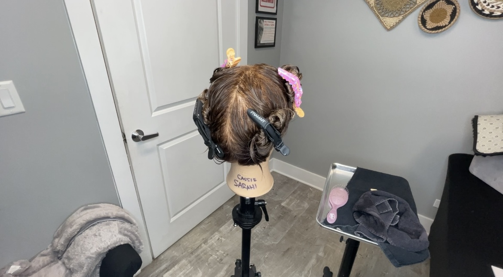
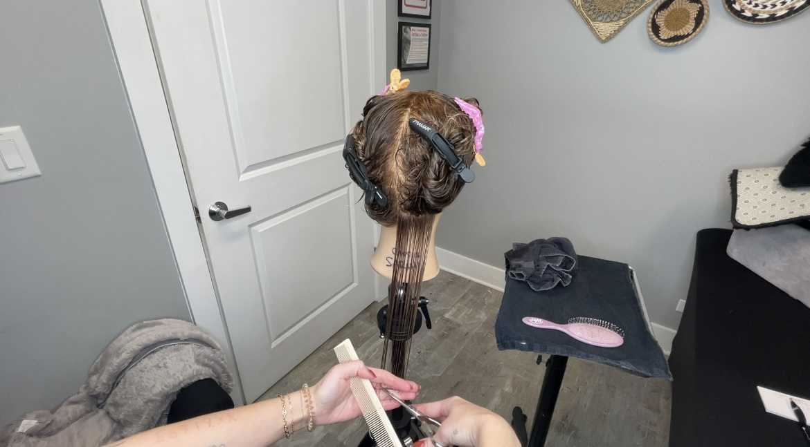
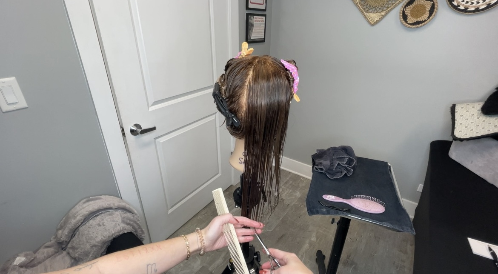
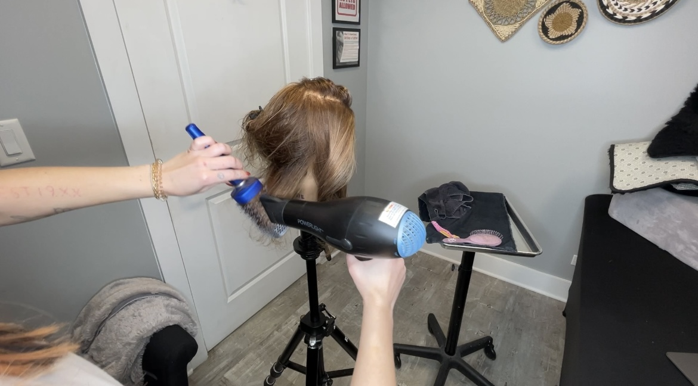

How to Cut Hair: A Step-by-Step Guide to a Blunt, One-Length Haircut
Cutting hair can seem tricky, but with the right steps, you can do it like a pro! A blunt, one-length haircut is a great style to start with because it’s simple and looks clean.
Here’s how you can do it in 7 easy steps:
Step 1:
Prepare the Hair
Start by washing the hair and towel-drying it until it’s damp. Use the spray bottle to lightly mist it with water if it’s drying out. This will make it easier to cut.

Step 2:
Section the Hair
Use hair clips to divide the hair into three sections: two on the sides and one in the back. Divide the back section down the middle and clip into two more sections. This helps keep things organized so you can work with one part of the hair at a time.

Step 3:
Start Cutting
Take one section of hair and hold it between your fingers. Decide how much you want to cut off—usually, about one to two inches is a good start. Hold the shears straight and cut across the hair. Make sure to cut evenly, so the length is the same all around.

Step 4:
Move to the Next Section
After cutting one section, move to the next one. Always make sure to match the length with the previous section. Keep going until you’ve cut all the hair on that side.
Step 5
Repeat on the Other Side
Release the clipped section and repeat the same steps on the other side of the head.
Step 6:
Check Your Work
Once both sides are done, check the length in the mirror. Make sure it looks even. If you see any uneven spots, carefully trim them until you’re happy with the look.

Step 7:
Style the Hair
After the cut is finished, you can style the hair to enhance the look. For a smooth, sleek finish, blow-dry the hair with a round brush. If you’d like, you can also use hot tools, like a flat iron or curling wand, to create different looks.

Conclusion
Congratulations! You’ve just learned how to cut a blunt, one-length haircut. With practice, you’ll get better, and you can experiment with different styles.